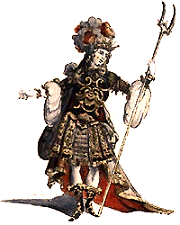

Les liens
des sites
traitant de l'orgue
sur la toile

Les liensdes sitestraitant de l'orguesur la toile |
|

Voici donc la page de lien de l'Hydraule reconstruite et mise à jour. Ces liens ne sont évidemment pas exhaustifs car des sites comme celui de Frédéric Chapelet (ou d'autres) font ce travail beaucoup mieux que je ne pourrai le faire. Par contre, vous trouverez ici des liens sur des sites qui m'ont particulièrement plu ou dont les administrateurs ont eu la gentillesse de faire référence à mon travail.
Vous désirez figurer sur cette liste de liens ? No problem, car cette fois, cette page est conçue pour être mise à jour en un clin d'œil (comme la page des adresses des facteurs d'orgues ou des organistes) ; comme d'habitude, il vous suffit donc de m'écrire.
Vous désirez qu'y soit ajouté un commentaire de mon cru comme c'est déjà le cas pour certains liens que j'aime particulièrement ? Alors là, c'est une autre histoire : les commentaires, c'est mon affaire, pas la vôtre ; j'en mets si je veux, quand je veux et dans la mesure expresse où la conjonction astrale de Mercure et du Soleil n'est pas en opposition totale avec Saturne (ce qui, contrairement aux apparences, est très courant...). Donc, pas la peine d'implorer la grâce des Dieux, de me faire une crise de nerf (comme certains m'en ont déjà gratifié...), de m'envoyer un tombereau d'e-mails, d'en appeler au pape (qui s'en moque autant sinon plus), je ne répondrai pas à cette requête-là. L'Hydraule est un lieu d'échange basé sur la gratuité du geste ; pas un comptoir de l'Internet marchand.
| S.M.C.J., Graniers, ce 1er janvier 2001. |
Quelques pages dont on jugera que l'esprit peut se prévaloir de ma préférence...
L'organaute (Site de Frédéric Chapelet). À la découverte des orgues d'Alsace (site de d'Éric Eisenberg). L'orgue de La Madeleine d'Albi (site de Jacques Schwartzentruber). L'orgue en @quitaine (site de Stéphane Raffaud). Quelques facteurs d'orgues d'ici et d'ailleurs...
- Laurent Plet.
- Georges Walther / Entreprise Muhleisen.
- Jean-Marie Tricoteaux.
- Yves Fossaert.
- Laliberté-Payment.
- Von Hausorgeln und ihrem Bau (remarquable site - en allemand - de Thomas et Ulrich Reinhardt et de Hans Jörg Fräulin).
Et encore...
- L'orgue dans le monde (Site de Robert Poliquin).
- Saguenay, Lac Saint Jean (Site d'André Côté).
- Sauvegarde de l'Orgue de la Sorbonne (site de Pierre Dubois).
- L'orgue de l'église Saint-Sébastien de Nancy.
- Amis de l'Orgue Cavaille-Coll de Saint-Maurice de Bécon
- Thomas Monnet, organiste.
- Orgues à nos Logis (site de Didier Guiraud de Willot).
- Petite collection d'orgues (site de Nicolas Provost).
- Le grand orgue Bartholomæi-Blési de l'église Saint-Gorgon de Moyeuvre-Grande (Moselle) (site d'Olivier Schmitt).
- L'orgue de Saint Eucaire de Metz (site de Frédéric Mayeur).
- Orgues de Montpon-Menesterol (site de Richard Gross).
- Les Amis des Orgues de Martel (site de Claude Rémy).
- L'orgue Staudt de Contz-les-Bains (site de Laurent Schmit).
- Le grand orgue du temple protestant de Nancy (site de Marc Pernot).
- Les Amis de l'Orgue de la Basilique Saint-Maurice d'Épinal.
- Die Orgel - Intonation, Forschung und Erläuterungen (site en allemand de Reiner Janke).
- L'orgue Aubertin de Saint-Loup-sur-Thouet.
- Temple Réformé de Grenoble.
- Bruxelles, Théâtre de la Monnaie (site de Marc Leuridan).
- Voce et Organo asbl - L'orgue Jacques (site de Pascal Dutry).
- Orgue en terre Cathare (site de Philippe Lecoq).
- Orgues et Organistes (site de Bruno Desoutter).
- Guilde Européenne des Organistes (site de Marc Adamczewski).
- Orgue en Baïgorry (site de Françoise Clastrier).
- Orgue passion (site de Brice Orlandini).
- Musica et Memoria.
- Les orgues en Haute Normandie (site de Benoît Lecoq).
- Claude Nadeau, claveciniste.
- L'iconographie de l'orgue et du clavecin (site d'Alban Thomas).
- Les Amis de l'Orgue Joseph Callinet de Dannemarie.
- Association pour la Formation des Organistes des Églises Protestantes
(site de Daniel Leininger).- L'orgue de l'église de Mouzon (site de Jean-Philippe Gélu).
- In Tempore Organi.
- Orgues de la cathédrale Saint-Jean l'Évangéliste - (Saint-Jean-sur-Richelieu)
(site de Mario Coutu).- L'orgue de l'église Saint-Étienne de Foug.
- L'orgue du Val-de-Grâce (site d'Hervé Désarbre).
- L'orgue Saint Louis de Saint Étienne (site de Michel Trémoulhac).
- Jean Langlais.
- L'orgue de Notre Dame de la Croix (Paris ; site de Frédéric Denis).
- Un temps libre pour l'art - La petite histoire de l'orgue (site de Nelly Jonhson).
- South African Organs (site de David Smit).
- Embourg et Mehagne (site de Jean-Marc Steux).
- Le Ludion (site de Philippe Crasse).
- Orgues & vitraux (site de Charles-André Schleppy).
- Mes instruments pour jouer les musiques du Moyen Âge (site de Claude Brassy).
- Références en Musicologie (site de Jean-Marc Warszawski).
- Société française de musicologie.
- Het Orgel.
- Orgelbouwers met Passie.
- Kerkorgel Pagina.
- Improvisations (site de Béatrice Piertot).
- Stéphane Catalanotti, organiste.
- Félix Moreau, Titulaire du Grand-Orgue de la Cathédrale de Nantes (site de Françoise et Christiane).
- L'Orgue (site d'Yves Masson).
- L'Association des Amis de l'Orgue de Notre-Dame-de-Lourdes de Nancy (site d'Yves Masson).
- AMORCE - (site des Amis de l'Orgue de la Cathédrale d'Évreux).
- L'orgue de Saint Pierre de Chaillot (Paris ; site de l'Association Chaillot Grandes Orgues).
- Connaître l'orgue (pages d'Yves Laot inclues dans le précédent).
- Un orgue coffre en Périgord (site de Laurent-Igor Poumarat).
- Les Amis des orgues de Montbrison (site de Denis Marconnet).
- Syndicat National Professionnel des Artistes Musiciens des Cultes.
- Les Amis des Orgues de Beaugency.
- Ars Organi « Les amis de l'orgue de Saint-Dagobert de Longwy-Haut » (site de Jean-Louis Girard).
- Association des Amis de l’Orgue de Saint-Génitour.
- Association Orgue et Musiques.
- Amour, Délices & Orgues (site d'Yves Harrand).
- L'église des frères Dominicains de Notre-Dame du Rosaire (site de Mark Butaye) Sous la rubrique Église, on peut trouver un chapitre consacré à l'orgue Van Bever, ses organistes, sa description et ses méditations.
- L'art du temps libre, le Site aux Mille Surprises. (site de Michèle Gabriel).
- Jeux d'orgues (site de Joseph Basquin).
- L'orgue Cavaillé-Coll de Bécon-les-Bruyères (site de Thomas Monnet).
- Association « Renaissance des Orgues de Vierzon ».
- Les amis de l'orgue de Coignières (site de Jean-Yves Espié).
- Organ' Isula (inventaire des orgues de Corse).
- L'orgue Aubertin de l'église Saint-Louis de Vichy (site de Jean Convert).
- Groupement Professionnel des Facteurs d'Orgues (G.P.F.O.)
- Association des amis de l'orgue de Bouc Bel Air (site de Claude Mousseigne).
- Les amis de l'orgue de l'église Saint Francois de Sales d'Annecy (site de Robert Scotton).
- Le grand orgue de la cathédrale de Fréjus (site de Patrice Caron).
- L'orgue de salon (site de John Belinguier).
Les orgues de ma région d'origine
- Orgue de Saint Paul de Nîmes (site de Pierre Viguier).
- Les Amis des Orgues d'Agde.
- Ganges.
- Anduze.
Orgues de barbarie.
- Crevecœur, orgue de barbariste (site de Patrice Giraud dit Crevecœur).
- Association des Amis des Instruments et de la Musique Mécanique (AAIMM).
Divers
- Les temples protestants de France (site de l'association Huguenots de France).
- Quotidien de la musique classique.
- Association pour le Respect et l'Intégrité du Patrimoine Artistique.
- french-horn.be, le site des cornistes belges (site de Claudine Novikow).
- Carnyx, association pour la promotion du cor.
- Métiers d'Art en Gascogne - Site des gens les plus sympas du monde.